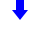
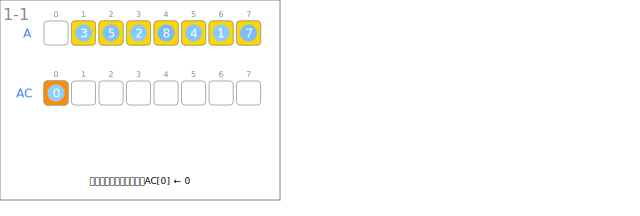
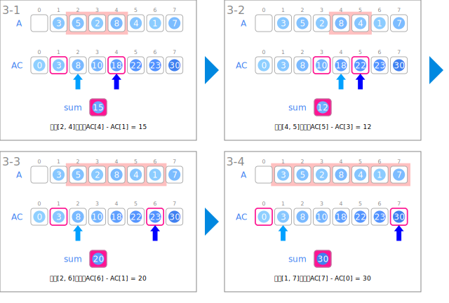

シンボル
| データ | ||
|---|---|---|
 | 入力の整数の列 | A |
| 整数の列の累積和 | AC | |
 | 区間の和 | sum |
| 入力 | ||
|---|---|---|
 | 整数の列を読み込みます。 | |
 | 累積和の先頭を0に初期化します。 | AC[0] ← 0 |
| 累積和の生成 | ||
 | １つ前の要素を加算していきます。 | AC[i] ← AC[i-1] + A[i] |
| 質問に対する処理 | ||
 | 区間の始点と終点から、和を計算します。 | sum ← AC[r] - AC[l-1] |
| 指定された区間。 | 区間[l, r] | |
| 区間の始点 | l | |
|  | 区間の終点。 | r |
アニメーション
入力

累積和の生成

質問に対する処理
